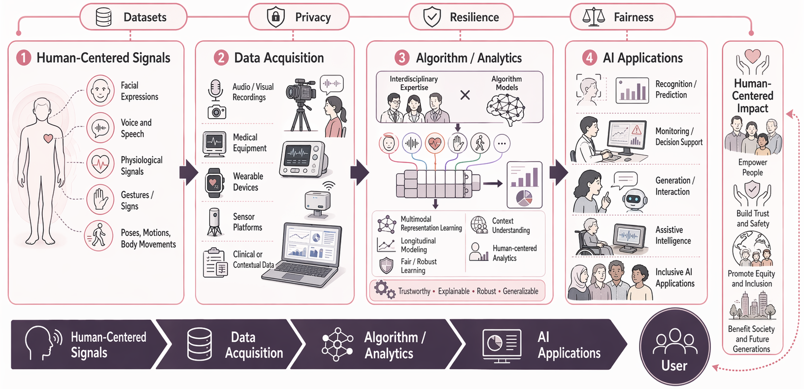
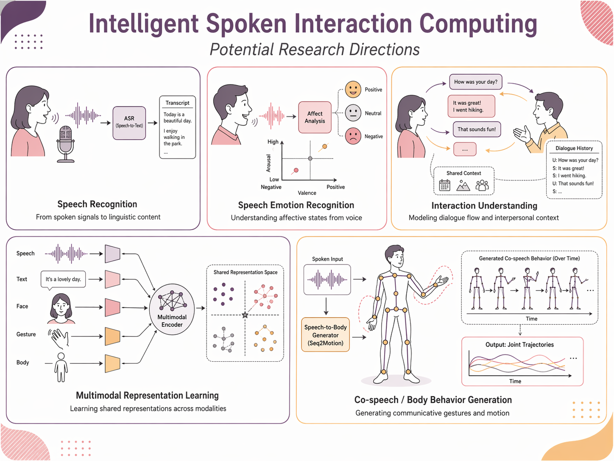
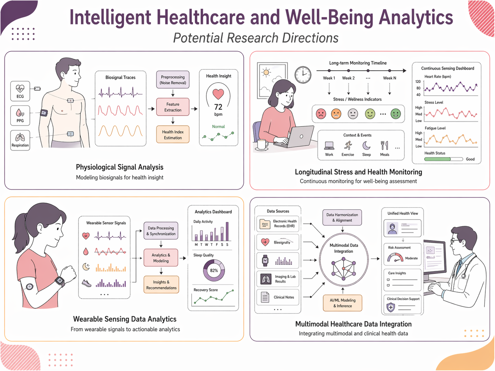
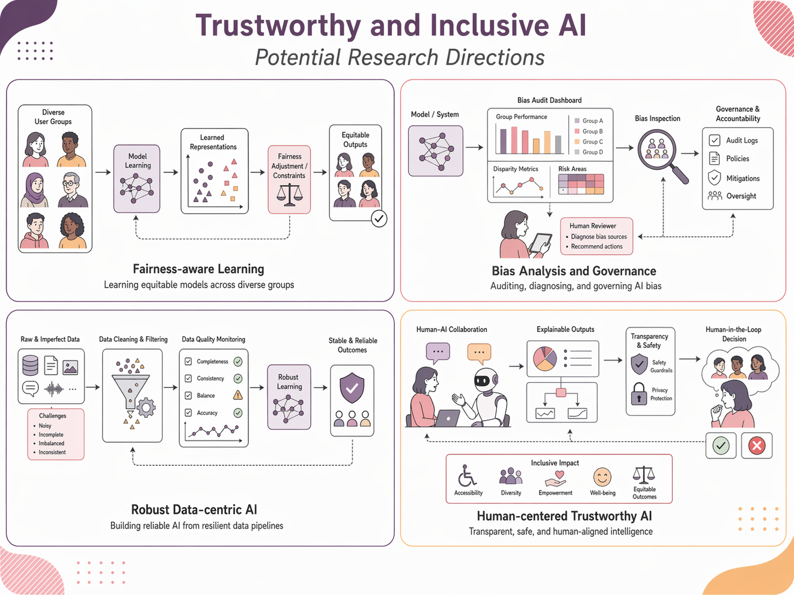

My research centers on human-centered signal computing, with a focus on how artificial intelligence can better understand people through speech, physiological signals, behavior, and multimodal interaction. I am interested in building AI systems that are not only accurate, but also clinically meaningful, socially aware, and deployable in real-world settings. Across my work, I study the full pipeline from human-centered signals and data acquisition to modeling, analytics, and downstream AI applications, while emphasizing key considerations such as privacy, resilience, fairness, and inclusive impact.

This vision highlights an end-to-end research framework that starts from human-centered signals, integrates multimodal data acquisition and algorithmic modeling, and advances toward impactful AI applications. The overarching goal is to develop intelligent systems that serve people in a trustworthy, inclusive, and socially beneficial way.
This research theme focuses on enabling AI systems to better understand, model, and generate spoken interaction in human communication. My work studies speech not only as an acoustic signal, but also as a socially embedded behavior shaped by emotion, context, interpersonal dynamics, and multimodal cues such as facial expressions, gestures, and body movements. Key directions include speech emotion understanding, interactive affect modeling, co-speech behavior analysis, and multimodal spoken interaction generation. I am particularly interested in how conversational structure, speaker variability, and audience or partner responses influence intelligent speech systems. This line of research also involves the development of naturalistic datasets and human-centered benchmarks that support more realistic modeling of spoken communication. Ultimately, the goal is to build AI that moves beyond isolated speech recognition and toward richer interaction intelligence that can perceive, respond to, and collaborate with people more naturally.

This research area explores how multimodal sensing and machine learning can support healthcare, mental well-being, and everyday health monitoring. I work with physiological signals, wearable devices, medical data, and longitudinal sensing streams to study problems such as stress detection, well-being analytics, and clinically relevant decision support. A major emphasis of my work is real-world robustness: healthcare data are often noisy, incomplete, heterogeneous across devices or sites, and collected under naturalistic rather than controlled conditions. To address these challenges, I investigate missingness-aware modeling, individualized learning, robust representation learning, and scalable longitudinal analytics. I am also interested in privacy-conscious and edge-deployable solutions that can make health monitoring more practical in daily environments. Through this line of work, I aim to develop intelligent analytics that are not only technically effective, but also meaningful for real-world health applications, early risk awareness, and human-centered healthcare technologies.

A central goal of my research is to develop AI systems that are trustworthy, transparent, and inclusive across diverse users and deployment scenarios. My work examines how bias, unfairness, annotation subjectivity, distribution shift, and unequal representation can shape the behavior of machine learning models, especially in speech and affective computing. I study fairness from both group and individual perspectives, and I am particularly interested in cases where human judgments themselves are biased or inconsistent, such as in emotion annotation. Beyond fairness, this topic also covers robustness, explainability, accountability, and privacy-aware design. I view trustworthy AI as more than a technical constraint: it is a human-centered design principle that connects model development with societal impact. The long-term objective is to create AI technologies that people can rely on, that better reflect human diversity, and that support safe and equitable use in education, healthcare, communication, and other real-world domains.

Keywords: speech emotion recognition, multimodal interaction, spoken language technologies, healthcare analytics, wearable sensing, fairness, robustness, explainable AI, inclusive AI, human-centered computing.